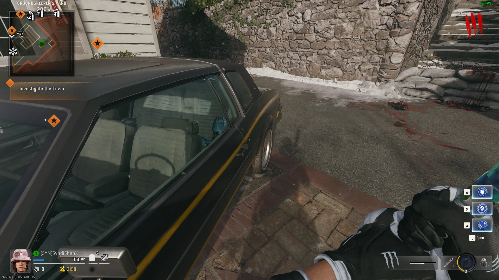

Easter Egg Song
Interact with 3 Bunny Headphones:
Free Mr. Peeks Loot
Have a car with Mr. Peeks in the Backseat get shot by a Mangler Cannon

Raining Zombies Easter Egg
Blow up the Mangler Head on the Church Roof
Free Deadshot Easter Egg
Shoot all 5 Perk Cans outside the Map without Missing
Gravedigger Easter Egg
Shoot the Barrel on the Grass Pad between Speed Cola and the Graveyard with a Chopper Gunner, Pick up the Shovel, then Dig up the Graves in the Graveyard

Dancing Zombies Easter Egg
Aim both Viewfinders at the Dancing Zombie on a Rock on the Same Round and all Zombies Except Abominations and Vermin will Dance

Bowling Easter Egg
Shoot 5 Bowling Shoes around the Map
You can Reactivate every 5 Rounds by Shooting the Shoes that Spawn in the Toilet in the Bowling Alley Bathroom
Free Powerups
Shoot Powerup Items around the Map
Aetherella Easter Egg
Suck up 8 Aetherella Statues around the Map with the Jet Gun
Free Jet Gun
Pick up the Water Valve from the Water Spout on the Flower Shop
Melee or Shoot the Panel int he Bowling Alley, then Hold interact to Decrease the Water Pressure until the Bar is Full, then pick up the Gauges
Kill Zombies on Each Level of the Graveyard, while Watching for the Groundskeeper to Spawn, Kill him and Pick up the Key
Open the Tool Shed in the Groundskeeper's Back Yard, and pick up the Handbrake
Have a Mangler Shoot open the Electronics Store Door, or Shoot it with a Mangler Cannon
Interact with the Piles of Tech Trash on the Ground until you get the Wires
Build it in the Motel Room that Opens when you get Close
Main Quest
Interact with the SDG
Obtain the Jet Gun and Suck up 3 Parts around the Map


Build the LTG on the Alamo Rooftop
Grab an Aether Canister from the SDG
Place it on one of the Dark Aether Generator Trap Pads by the Graveyard
Place the LTG on the Dark Aether Cloud and Protect it
Get the HVT that Spawns to Low Heath (It will start Glowing Purple)
Activate the Trap and Let it Die inside of the Area
Grab the Aether Canister and Place it into the SDG
Grab the Strauss Counter from the SDG
Got to Each of the 3 Dark Aether Projectors and Calibrate them using the Strauss Counter (Green = Red, Yellow = Yellow, Red = Green)
Grab the Aether Canister from Spawn

Place it on one of the Dark Aether Generator Trap Pads in Spawn
Place the LTG on the Dark Aether Cloud and Protect it
Get the HVT that Spawns to Low Heath (It will start Glowing Purple)
Activate the Trap and Let it Die inside of the Area
Grab the Aether Canister and Place it into the SDG
**PREPARE FOR THE BOSS FIGHT**
Activate the SDG to Start the Boss Fight
Kill the HVT, Zombies should stop Spawning, Kill the Zombies to Complete the Wave, Repeat this 3 Times to Trigger the Cutscene